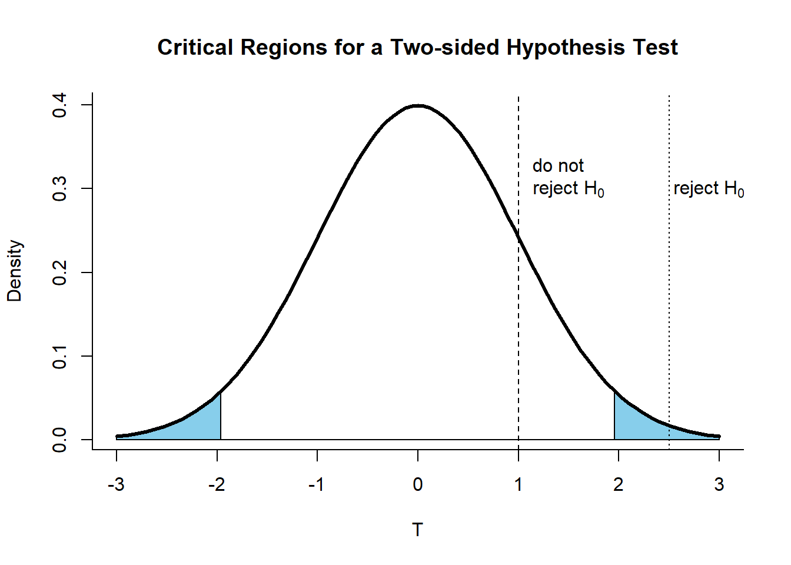
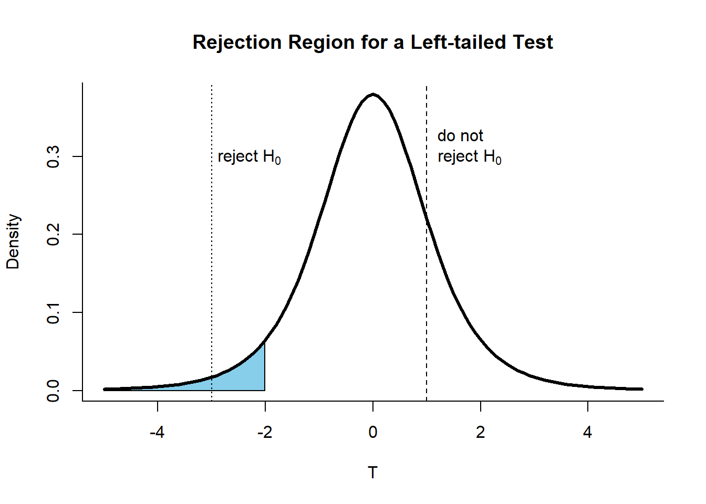
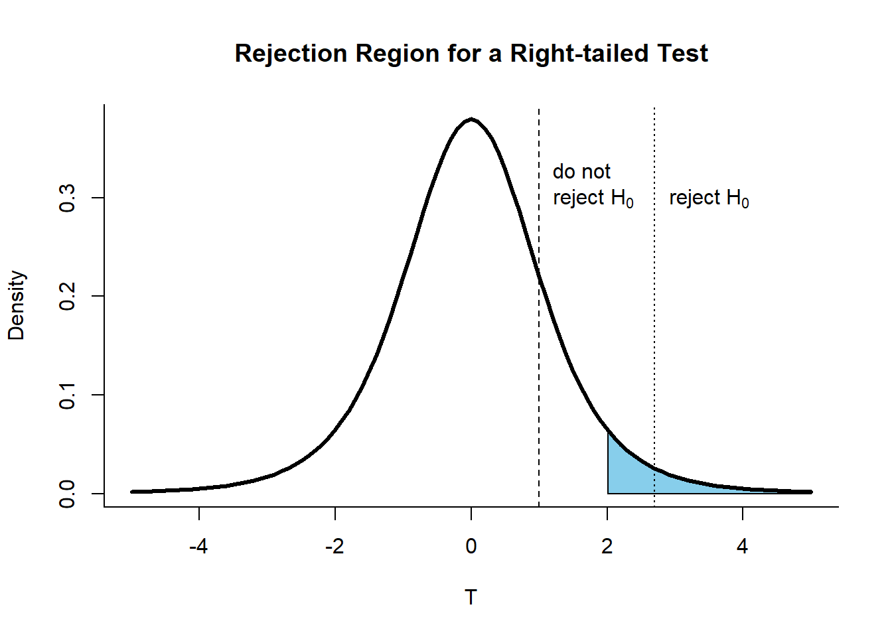

Unit 4 Hypothesis Testing
4.1 Hypothesis Testing
Suppose one is interested in finding out whether one advertising method, say X, is more effective than a similar method Y in increasing the sales of a business. “Is method X more effective than method Y?”
A simple way to answer this is to collect data for both Method X and Method Y. Suppose we randomly select a day or week, and count the number of sales attributable to each method during this period. We could then get the average of both methods and take the difference. We can say that Method X is better if the difference is positive, or worse if the difference is negative. This seems simple, but remember that the values will vary each time the data is collected. Hence, the difference in the averages will also be different and we cannot be 100% certain of the magnitude and direction of the difference.
With the uncertainties that are inherent in doing an experiment, how then can answer such questions as the one above in a principled way? The answer is Statistics.
Hypothesis testing is a tool used to obtain statistical evidence to arrive at certain decisions given the data, accounting for uncertainty.
4.1.1 The Null and Alternative Hypotheses
Suppose we have a space \(\Omega\) where all possible parameters \(\theta\) about the data can be found. We can then divide this set into two mutually exclusive sets which we call \(\Omega_0\) and \(\Omega_1\). We shall then denote \(H_0\) as the hypothesis that \(\theta \in \Omega_0\), while \(H_1\) is the hypothesis when \(\theta \in \Omega_1\). In statistical literature, these two hypotheses are called the null hypothesis and the alternative hypothesis, respectively.
4.1.2 Decision Errors
Since there are two hypotheses and they are disjoint, only one hypothesis can be true. If the wrong hypothesis is taken to be true, a loss or cost is incurred.
Suppose that the \(\theta \in \Omega_0\) or the null hypothesis is true, but it is rejected. This is called a Type I error. If instead \(\theta \in \Omega_1\) or the alternative hypothesis is true, but we do not reject the null hypothesis, we are making a Type II error.
For most cases, we can set our hypothesis test to have a certain Type I error rate, \(\alpha\) (a number from 0 to 1), which corresponds to the probability of committing a Type I error. Thus, if we have a test with \(\alpha = 0.05\), it means that we have at most a 5% chance of rejecting the null hypothesis when the null hypothesis is true.
The Type II error, which is denoted by \(\beta\) and corresponds to not rejecting a false null hypothesis, is related to a concept called power. Statistical power is the probability of a hypothesis test of finding an effect if there is an effect to be found. Mathematically, power is computed as \(1 - \beta\). Experimental design includes what is called power analysis, which determines the appropriate sample size needed to detect the desired difference or effect. This is beyond the scope of the course, and will not be discussed further here.
4.1.3 Setting Up Hypotheses
Using the advertising example above, suppose that the hypothesis is \(\mu_X > \mu_Y\) with respect to sales, i.e. Method X generates more sales that Method Y. Analysts could claim that the data supports the theory that \(\mu_X > \mu_Y\), when in fact \(\mu_X \leq \mu_Y\) (Case 1). They could also mistakenly claim that data fails to support \(\mu_X\) > $_Y when it is true (Case 2). Both cases entail a rejection of the null hypothesis and for both situations, the setup of the null and alternative hypothesis are different, as shown below.
For Case 1:
\[ \begin{aligned} H_0 &: \mu_{X} \leq \mu_{Y}\\ H_1 &: \mu_{X} > \mu_{Y} \end{aligned} \]
For Case 2:
\[ \begin{aligned} H_0 &: \mu_{X} \geq \mu_{Y}\\ H_1 &: \mu_{X} < \mu_{Y} \end{aligned} \]
It is helpful to think about the consequence of mistakenly rejecting the null hypothesis, i.e., committing a type I error. In most business cases, it is costly to introduce a new method as it will likely entail higher costs during implementation than retaining the old method. Thus, mistakenly rejecting the null hypothesis of Case 1 will be more costly to the business than 2 as Case 2 is about retaining the current strategy.
Intuitively, \(H_0\) represents the status quo or current situation (“no difference”, hence the equality) and \(H_1\) asserts that there is a difference. This is why in practice, \(H_0\) must always contain some form of equality (\(=\), \(\leq\), \(\geq\)) and \(H_1\) must be stated in a way that complements \(H_0\) exactly.
4.2 Simple and Composite Hypotheses
A simple hypothesis is where the parameter \(\theta\) has only one value in either \(\Omega_0\) or \(\Omega_1\). Such a setup is shown below:
\[ \begin{aligned} H_0 &: \theta=\theta_0 \\ H_1&: \theta \neq \theta_0 \end{aligned} \]
\(\theta_0\) is the parameter value of the null hypothesis set. Statistical tests that seek to test this hypothesis setup are called two-sided hypothesis tests.
A composite hypothesis, on the other hand, is a setup where the hypothesis space of either \(\Omega_0\) or \(\Omega_1\) contains more than one value for \(\theta_0\). There are two ways to set up a composite hypothesis and the difference lies in the inequality sign used. One could either do:
\[ \begin{aligned} H_0 &: \theta\leq\theta_0 \\ H_1&: \theta > \theta_0 \end{aligned} \]
or the opposite which is:
\[ \begin{aligned} H_0 &: \theta\geq\theta_0 \\ H_1&: \theta < \theta_0 \end{aligned} \]
Statistical tests for composite hypotheses are called one-sided tests and, depending on the inequality sign of the alternative hypothesis, it can either be called a right-tailed (first) or a left-tailed test (second).
4.3 Testing Hypotheses
4.3.1 Using a Critical Value \(c\)
In doing a hypothesis test, we either decide to reject or not reject the null hypothesis. To do so, we need to define a statistic \(T\) as the “distance” between the sample statistic and \(\theta_0\). \(T\) is thus random (as our data is a random sample of our population). Given a particular value of \(\theta_0\), we might want to have a threshold \(c\), which we will call the critical value. Using \(c\) we can decide to reject \(H_0\) if \(T \geq c\), or not reject \(H_0\) if \(T < c\). Each threshold corresponds to a value of \(\alpha\).
The correct way of testing hypotheses is to set the \(\alpha\) first and then use the corresponding critical value \(c\). The mathematics behind this is ommitted for now as it can get quite overwhelming. If this has piqued curiosity, however, a number of introductory statistics texts and resources on the Internet explore the mathematical underpinnings of hypothesis testing in detail. The applications of this concept will be shown in the unit on z-tests and t-tests.
4.3.2 Visualizing Rejection Regions
Values that are greater than or equal to a certain threshold \(c\) that intersect with the alternative hypothesis parameter space \(\Omega_1\) are contained within the rejection region. Rejection regions in the visualizations below are colored in blue.
For a two-sided hypothesis test, we reject on both tails for a symmetric distribution (usually a normal distribution). This is so since an extremely high or low sample statistic can be evidence for us to reject \(H_0\) (as implied by the \(\neq\) sign). Since the probability of rejecting a true \(H_0\) supposedly covers both high and low values, the critical value \(c\) to be used should correspond to \(\alpha/2\), not \(\alpha\).

For one-sided tests, we reject depending on the parameter space of the alternate hypothesis. Hence, the rejection region for a left-tailed test can be shown as:

The rejection region for a right-tailed test is shown below:

4.3.3 The p-value
Another important concept is the p-value which is often reported in analyses to denote statistical significance relative to a set \(\alpha\) (usually 0.05). It is defined as the probability of obtaining test results at least as extreme as the results actually observed when \(H_0\) is true.
It can be thought of as a measure of how “surprised” you are with the data. Higher values mean that the data is not at all surprising relative to the null hypothesis. Although this might be the case, p-values do not dictate the probability that the null hypothesis is true given the data, and cannot be used to draw conclusions on how likely the null hypothesis is compared to the alternative, and vice versa. It only allows one to decide whether or not to reject \(H_0\).
Nonetheless, we can by definition, use p-values to test for hypothesis. This is done by calculating the p-value and comparing it with a set \(\alpha\) level. We reject the null hypothesis if the p-value \(p \leq \alpha\).